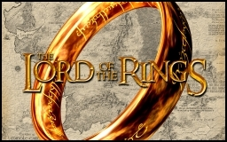

|  | |
U trećem dijelu, Povratak kralja, nastavljaju se avanture Gandalfa, Aragorna, Gimlija i Legolasa usporedno s Frodovim i Samovim. Kao što je rečeno u prvoj knjizi, Družina pomaže u posljednjoj bitki protiv Sauronovih snaga, uključujući i opsadu Minas Tiritha u Gondoru i posljednjoj bitki za život i smrt pred Crnim Dverima Mordora, gdje se savez Gondora i Rohana očajnički bori protiv Sauronove vojske, da bi im odvratili pažnju od Prstena, te tako dajući vremena Frodi da ga uništi.
U drugoj knjizi, Sam spašava Froda iz zarobljeništva. Nakon mnogo patnje, stižu do Klete gore, dok ih Golum prati. Međutim, iskušenje Prstena se pokaže preveliko za Froda i on ga zadržava za sebe, ne želeći ga uništiti. Međutim, Golum ga napada i uspijeva mu odgristi Prsten sa prsta. Sluđen uspjehom, Golum se posklizne i zajedno s Prstenom pada u vrelu lavu, gdje Prsten konačno biva uništen.
 | |
 |